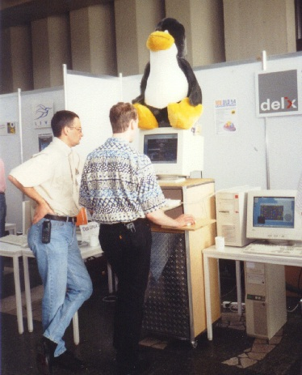
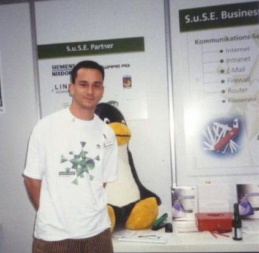

"Linux Gazette...
making Linux just a little more fun!
"
The Fifth International Linux Congress Photo album
Photographs by John Kacur

Two Participants Communing with Tux

S.u.S.E. Booth
Jon "maddog" Hall and Two Participants Outside Cologne Pub
Copyright © 1998, Photographer, John Kacur
Published in Issue 33 of
Linux Gazette
October 1998